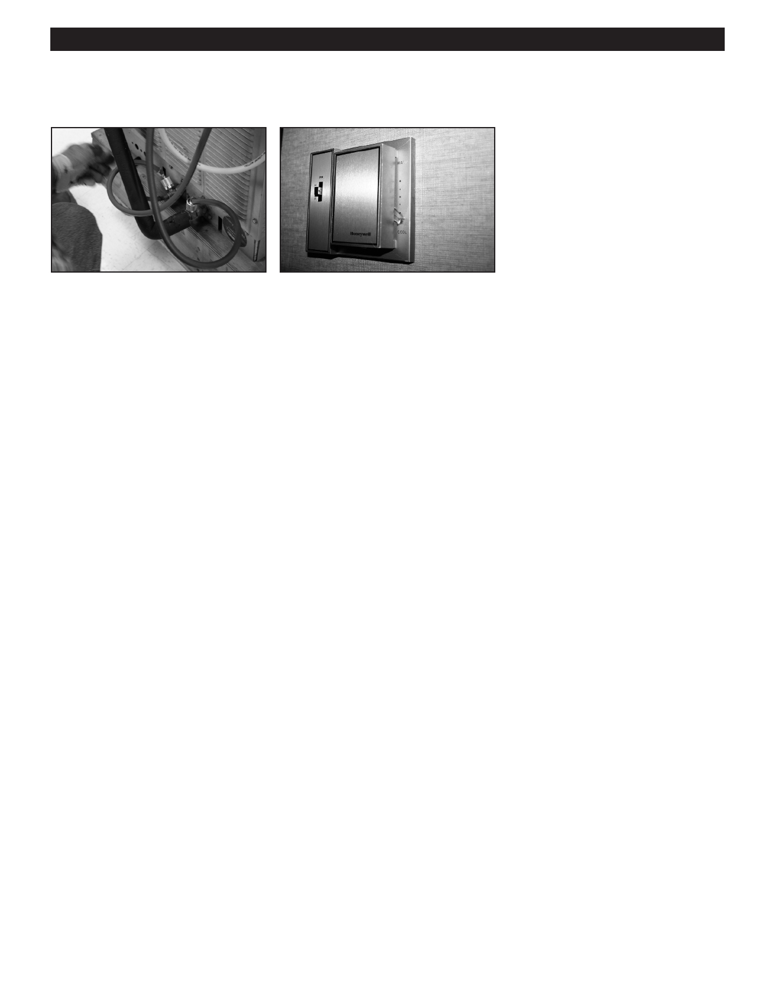

PA RT I C I PA N T R E S O U R C E G U I D E
Key Parts of an Air Conditioning System (continued)
Service ports: These valves allow
Thermostat: People use this device
access to the refrigerant for any
to turn the air conditioning on and off,
diagnostic or servicing needs. The ports as well as to set the desired indoor
are usually located on the refrigeration
temperature. Thermostats can be
lines near the compressor, but can be
programmable and set digitally—or t
at differing points in the line set. Some
hey can be analog and set by a lever or
ports can also be used to isolate one
a dial.
part of the refrigerant system from
another by repositioning a valve stem.
Supply: Located on the discharge
side of the evaporating coil, the supply
delivers cool air to the apartment. The
supply includes the building’s plenum,
supply duct, branch ducts, and wall
registers.
23